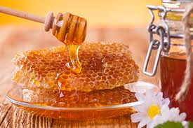

Наряду со многими удивительными способностями природа наделила пчелу и "оружием", с помощью которого она защищает свое гнездо, — ядовитой жидкостью, вырабатываемой в её организме большой и малой ядовитыми железами. При встрече с противником пчела пронзает своим острым жалом покров и вспрыскивает в образовавшуюся ранку жгучий яд. Причем имеющиеся на конце жала зазубринки не дают возможности его свободно вынуть, и яд продолжает поступать из специального резервуара в течение нескольких секунд. Затем жало отрывается с частью внутренних органов, и некоторое время спустя пчела погибает.
Но запах яда быстро распространяется и, как по тревоге, мобилизует других пчел на защиту своего жилища.
ЧТО ЖЕ ПРЕДСТАВЛЯЕТ СОБОЙ ПЧЕЛИНЫЙ ЯД? Это прозрачная жидкость с резким запахом, несколько напоминающим запах мёда, с горьким и жгучим вкусом. Несмотря на то что пчеловодство является древнейшей отраслью, химический состав пчелиного яда изучен сравнительно недавно и пока не полностью.
Установлено, что в состав яда входят 9 белковых веществ, различные пептиды, 18 аминокислот, гистамин, жировые вещества и стеарины, углеводы, более десяти минеральных веществ и др.
Из пчелиного яда выделен ряд весьма активных по своему действию на организм веществ (ацетилхолин и гистамин), а также неорганические кислоты, соляная, ортофосфорная), которые и вызывают чувство жжения при ужалении пчелой.
Сложность химического состава апитоксина (научное название пчелиного яда) определяет и сложность его действия на организм человека.
Большинство здоровых людей легко переносят 5 и даже 10 одновременных ужалений. При этом возникает лишь местная реакция, выражающаяся в появлении боли, жжения, припухлости и красноты на месте ужаления. В том же случае, когда в организм попадает большое количество яда, возникает и общая реакция. Она может выражаться в недомогании, повышении температуры, головной боли, появлении сыпи тип крапивницы. В более тяжелых случаях появляются рвота, понос, одышка, синюшность, учащение пульса, падение кровяного давления, боли в области сердца, пояснице, озноб, потеря сознания. И если вовремя не оказать помощь, то может наступить смерть от остановки дыхания.
Чувствительность людей к пчелиному яду различна. У лиц с повышенной чувствительностью к нему ужаление даже одной пчелы может вызывать тяжелую общую реакцию. Наиболее болезненно реагируют на апитоксин женщины (особенно беременные), дети и люди пожилого возраста. Однако при частом, регулярном ужалении, как это бывает у пчеловодов, чувствительность к пчелиному яду понижается.
Смертельной дозой для взрослого человека считаются 500 одновременных ужалений; 200–300 ужалений вызывают тяжелое отравление.
Но, несмотря на то что апитоксин в больших дозах может вызвать сильное отравление, вплоть до смертельного исхода, в терапевтических дозах он является весьма ценным лекарственным средством при лечении самых разных заболеваний.
Пчелиный яд в целебных целях использовали еще в древности. Апитерапия (лечение апитоксином — пчелиным ядом) была известна в Древнем Египте, Индии, Китае, Греции. Известно, что Карл Великий и Иван Грозный пчелиными ужалениями излечились от подагры.
Современной медициной разработана методика апитерапии и установлены основные показания для применения пчелиного яда как лечебного средства. Определены также противопоказания к апитерапии, т. е. в настоящее время известна группа заболеваний, при которых введение пчелиного яда ухудшает течение заболевания.
Чаще всего лечение пчелиным ядом проводится для уменьшения болей и воспалительных явлений в суставах и в мышцах ревматического и другого происхождения, при невралгиях, ишиасе, бронхиальной астме, гипертонической болезни, мигрени, при плохо заживающих ранах и язвах, тромбофлебите и т. д.
Ряд авторов отмечает также положительное действие пчелиного яда при лечении больных с хроническими воспалительными процессами придатков матки, а также страдающих гнездовой и очаговой плешивостью, различными глазными (например, иритом, иридоциклитом) и другими болезнями.
Но, рассматривая исцеляющие свойства пчелиного яда, которые позволяют широко использовать его в лечебных целях, все же хочется подчеркнуть: апитерапия не является панацеей от всех недугов. Более того, она имеет немало противопоказаний. Так, пчелиный яд нельзя назначать при болезнях печени, почек и поджелудочной железы, при диабете, опухолях, туберкулезе, при сердечной недостаточности, при инфекционных заболеваниях, истощении, а также при повышенной чувствительности к яду. Введение апитоксина при перечисленных заболеваниях вызывает обострение основной болезни, ухудшение общего состояния больного.
Вот почему нельзя заниматься апитерапией самостоятельно. Прежде чем провести курс лечения пчелиным ядом, больной должен пройти тщательное, всестороннее обследование для выявления у него противопоказаний. Обследование с обязательным проведением анализа крови и мочи необходимо больному и в процессе лечения. Так что в любом случае апитерапия должна проводиться с согласия и под квалифицированным контролем врача.
Мы же в заключение этого раздела напомним читателю правила оказания помощи при отравлении пчелиным ядом.